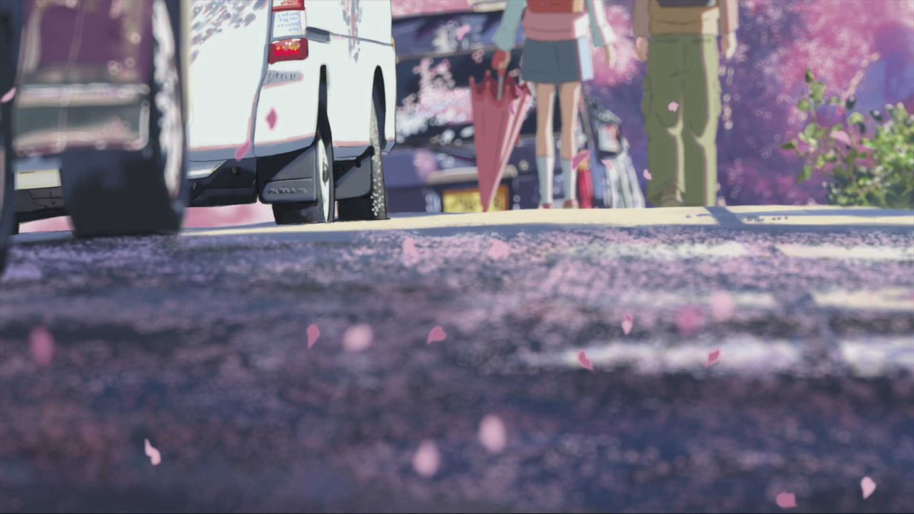

Zooming
人们常说，心中有梦，不怕天涯路远，眼里有情，何惧秋风寒呢！常常觉得，我是一个爱做梦的女子，时刻在做着虚幻的梦，不肯醒来。当时光偷换了年华，光阴在疯长，一切却如同昨日云烟，转瞬即逝，刹那的一念起，缘起缘灭，转身的一瞬间，便是沧海桑田，那些青春年少的时光曾经飘荡在云端上的梦，与我隔着那样遥远的距离。
Original image
蓦然回首这半生走过的足迹，层层叠叠于时光的转角处，虽已模糊不清，却依旧感慨万千。角落里的花，悄然绽放，无需观众，也同样精彩。一直认为，一个真正内心富有的人，不需要太张扬的个性，看重浮华名利的背后，鲜花和掌声再多么热情，也和价值无关。
时间可以改变一切，比如年轮，容貌，却无法改变一个人思乡情结。离别故乡多年，漂泊在外的脚步疲惫不堪，乡愁也日益浓郁。时常独自站在深夜里，举目眺望深邃的夜空，遥望故乡的方向，一幕幕的往事总会浮现在眼前。故乡的一草一木，一屋一舍，亲人们的笑脸和嘱托，儿时的时光总能勾起深深的回忆。
Thumbnails only
Thumbnails with data-original
随着年轮的增长，岁月的叠加，我被时光无情的隔在了这头。如今，童年的玩伴早已长大，昔日嬉戏玩耍的画面早已被光阴无情的掩埋，成了名副其实的沙漏。
记得上次回故乡的时候，路上遇到了邻里的大叔一下子愣住了。以前一口气能扛几十个麻袋粮食都面不改色的大叔，硬朗的身板，如今已经驼背了，走路蹒跚，满脸皱纹，鬓角斑白，面对面的时候我们似乎都愣在原地，一时间名字在嘴边却说不出来了。迟疑了片刻才缓过神来，热情的打起了招呼。大叔憨厚的笑声依旧爽朗，拉住我的手亲切的问候着，眼神里却带着些许的生疏和感动。